Learning Module 6 Capital Structure - Part 3: Modigliani–Miller Capital Structure Propositions
Volume 3: Corporate Issuers
Learning Module 6 Capital Structure
Part 3/4: Modigliani–Miller Capital Structure Propositions (PDF Pages 199–208)
Tập 3: Tổ chức Phát hành Doanh nghiệp (Corporate Issuers)
Học phần 6: Cấu trúc Vốn (Capital Structure)
Phần 3/4: Các Định đề Cấu trúc Vốn của Modigliani–Miller (Modigliani–Miller Capital Structure Propositions) (Trang PDF 199–208)
C. equity sourced from founders and employees. Solution: C is correct. Newtech is in the early stages of its corporate life cycle. Equity financing for early-stage firms is sourced from founders, employees through share-based compensation, and venture capital. Generally, the only sources of debt financing available for these firms are leases and convertible debt. Equity financing through an IPO is unlikely given that most stock exchanges have minimum size and profitability requirements. 4. Given the forecast of deteriorating business conditions, which company will experience a greater change in cash flow and profitability? A. Newtech B. No difference C. Oldtech Solution: C is correct. With revenue growth slowing, Oldtech is likely to experience a greater change in cash flow and profitability. Despite being in the mature phase of the corporate life cycle, during which one would expect stable profits, Oldtech has high operating leverage given its high degree of fixed cost. This will result in a greater change in profits for a given change in revenues. In contrast, Newtech’s costs are variable, with low operating leverage. 5. The business model used by Oldtech can best be described as: A. capital light. B. capital intensive. C. contractual rather than ownership relationships. Solution:
- C. vốn chủ sở hữu được huy động từ những người sáng lập và nhân viên.
Lời giải:
C là đáp án đúng. Newtech đang ở những giai đoạn đầu của vòng đời doanh nghiệp. Nguồn tài trợ bằng vốn chủ sở hữu cho các doanh nghiệp giai đoạn đầu được huy động từ những người sáng lập (founders), nhân viên thông qua thù lao bằng cổ phiếu (share-based compensation), và vốn mạo hiểm (venture capital). Nhìn chung, các nguồn tài trợ bằng nợ duy nhất có sẵn cho các doanh nghiệp này là thuê tài sản (leases) và nợ chuyển đổi (convertible debt). Tài trợ bằng vốn chủ sở hữu thông qua phát hành cổ phiếu lần đầu ra công chúng (IPO) là khó có khả năng xảy ra do hầu hết các sở giao dịch chứng khoán đều có các yêu cầu tối thiểu về quy mô và khả năng sinh lời.
B is correct. Oldtech’s business model can best be described as capital intensive given its high fixed costs, low capital turnover, and high capital-expenditure-to-sales ratio. The firm requires a lot of assets and has significant financing requirements. Newtech is capital light since most of its costs are variable and its assets are largely cash and intangibles.
- Với dự báo về các điều kiện kinh doanh đang xấu đi, công ty nào sẽ trải qua mức thay đổi lớn hơn về dòng tiền và khả năng sinh lời? - A. Newtech - B. Không có sự khác biệt - C. Oldtech
Lời giải:
C là đáp án đúng. Khi tốc độ tăng trưởng doanh thu chậm lại, Oldtech có khả năng sẽ trải qua mức thay đổi lớn hơn về dòng tiền và khả năng sinh lời. Mặc dù đang ở giai đoạn trưởng thành của vòng đời doanh nghiệp—giai đoạn mà người ta thường kỳ vọng lợi nhuận ổn định—nhưng Oldtech lại có đòn bẩy hoạt động (operating leverage) cao do mức độ chi phí cố định cao. Điều này sẽ dẫn đến sự thay đổi lớn hơn về lợi nhuận ứng với một mức thay đổi nhất định của doanh thu. Ngược lại, chi phí của Newtech là chi phí biến đổi, với đòn bẩy hoạt động thấp.
- Mô hình kinh doanh được Oldtech sử dụng có thể được mô tả đúng nhất là: - A. ít thâm dụng vốn (capital light). - B. thâm dụng vốn (capital intensive). - C. mối quan hệ hợp đồng thay vì quan hệ sở hữu (contractual rather than ownership relationships).
MODIGLIANI–MILLER CAPITAL STRUCTURE PROPOSITIONS
Lời giải:
B là đáp án đúng. Mô hình kinh doanh của Oldtech có thể được mô tả đúng nhất là thâm dụng vốn (capital intensive) do chi phí cố định cao, vòng quay vốn thấp (low capital turnover), và tỷ số chi tiêu vốn trên doanh thu (capital-expenditure-to-sales ratio) cao. Doanh nghiệp này đòi hỏi rất nhiều tài sản và có nhu cầu tài trợ đáng kể. Newtech là doanh nghiệp ít thâm dụng vốn (capital light) vì phần lớn chi phí của công ty là chi phí biến đổi và tài sản chủ yếu là tiền mặt và tài sản vô hình.
CÁC ĐỊNH ĐỀ CẤU TRÚC VỐN CỦA MODIGLIANI–MILLER (MODIGLIANI–MILLER CAPITAL STRUCTURE PROPOSITIONS)
Chú thích hình ảnh: Phần 4 (Section 4)
explain the Modigliani–Miller propositions regarding capital structure
Mục tiêu học tập: giải thích các định đề của Modigliani–Miller (Modigliani–Miller propositions) về cấu trúc vốn
In a classic 1958 paper, Nobel Prize–winning economists Franco Modigliani and Merton Miller argued that under certain assumptions, a company’s choice of capital structure does not affect (or is “irrelevant” in determining) its value, where firm value is equal to the present value of the firm’s expected future cash flows, discounted by its weighted-average cost of capital. In short, managers cannot change a company’s value by simply changing its capital structure. The assumptions used by Modigliani and Miller (MM) are shown in Exhibit 3.
Trong một bài báo kinh điển năm 1958, hai nhà kinh tế học đoạt giải Nobel là Franco Modigliani và Merton Miller đã lập luận rằng dưới những giả định nhất định, sự lựa chọn cấu trúc vốn của một công ty không ảnh hưởng (hay nói cách khác là “không liên quan” – irrelevant trong việc xác định) đến giá trị của công ty đó, trong đó giá trị doanh nghiệp bằng giá trị hiện tại của các dòng tiền tương lai kỳ vọng của doanh nghiệp, được chiết khấu theo chi phí sử dụng vốn bình quân gia quyền (WACC). Tóm lại, các nhà quản lý không thể thay đổi giá trị của một công ty chỉ bằng cách thay đổi cấu trúc vốn của nó. Các giả định được Modigliani và Miller (MM) sử dụng được trình bày trong Minh họa 3.
Exhibit 3: Modigliani–Miller Assumptions
Minh họa 3: Các Giả định của Modigliani–Miller (Exhibit 3: Modigliani–Miller Assumptions)
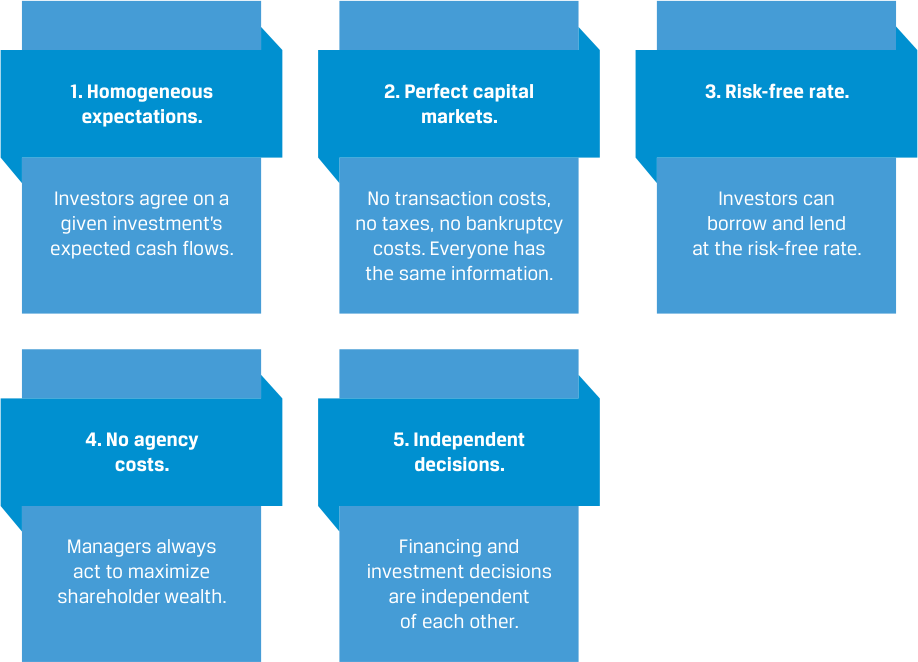
Chú thích hình ảnh: 1. Kỳ vọng đồng nhất (Homogeneous expectations): Các nhà đầu tư có cùng quan điểm về dòng tiền kỳ vọng của một khoản đầu tư nhất định. 2. Thị trường vốn hoàn hảo (Perfect capital markets): Không có chi phí giao dịch, không có thuế, không có chi phí phá sản. Mọi người đều có cùng thông tin như nhau. 3. Lãi suất phi rủi ro (Risk-free rate): Các nhà đầu tư có thể đi vay và cho vay ở mức lãi suất phi rủi ro. 4. Không có chi phí đại diện (No agency costs): Các nhà quản lý luôn hành động nhằm tối đa hóa tài sản của cổ đông. 5. Các quyết định độc lập (Independent decisions): Các quyết định tài trợ và quyết định đầu tư hoàn toàn độc lập với nhau.
Modigliani and Miller then relaxed their assumptions to show how taxes and financial distress costs do result in capital structure having an impact on firm value, though relatively modest in practice. While their assumptions do not hold in practice—which ultimately does alter MM’s original conclusion of capital structure irrelevance—their theoretical framework remains a popular starting point for considering the use of debt in a company’s capital structure. What is clear is that it’s a firm’s future cash flows that are the primary driver of value, not capital structure.
Sau đó, Modigliani và Miller đã nới lỏng các giả định của họ để chỉ ra cách thức mà thuế và chi phí kiệt quệ tài chính (financial distress costs) thực sự dẫn đến việc cấu trúc vốn có tác động đến giá trị doanh nghiệp, mặc dù tương đối khiêm tốn trên thực tế. Mặc dù các giả định của họ không hoàn toàn đúng trong thực tiễn—điều này cuối cùng làm thay đổi kết luận ban đầu của MM về sự không liên quan của cấu trúc vốn—nhưng khuôn khổ lý thuyết của họ vẫn là một điểm khởi đầu phổ biến khi xem xét việc sử dụng nợ trong cấu trúc vốn của một công ty. Điều rõ ràng là chính các dòng tiền tương lai của doanh nghiệp mới là động lực chính tạo ra giá trị, chứ không phải cấu trúc vốn.
Capital Structure Irrelevance (MM Proposition I without Taxes)
Sự Không Liên quan của Cấu trúc Vốn (Định đề I của MM Không có Thuế — MM Proposition I without Taxes)
Modigliani and Miller demonstrated that changing the capital structure does not affect firm value based on investors being able to create any capital structure they wish for a company by simply borrowing and lending themselves in addition to owning a firm’s shares. This “homemade” leverage argument relies on the assumption that investors can lend and borrow at the risk-free rate.
Modigliani và Miller đã chứng minh rằng việc thay đổi cấu trúc vốn không ảnh hưởng đến giá trị doanh nghiệp dựa trên việc các nhà đầu tư có thể tự tạo ra bất kỳ cấu trúc vốn nào họ muốn cho một công ty bằng cách tự mình đi vay và cho vay bên cạnh việc sở hữu cổ phiếu của doanh nghiệp đó. Lập luận đòn bẩy “tự tạo” (“homemade” leverage) này dựa trên giả định rằng các nhà đầu tư có thể cho vay và đi vay ở mức lãi suất phi rủi ro.
Say, for example that a company has a capital structure consisting of 50% debt and 50% equity and that an individual investor would prefer that the company’s capital structure be 70% debt and 30% equity. The investor could borrow money to finance her share purchases so that her ownership of company assets would reflect her preferred 70% debt financing. This action would be equivalent to buying stock on margin and would have no effect on either the company’s expected operating cash flows or company value.
Ví dụ, giả sử một công ty có cấu trúc vốn bao gồm 50% nợ và 50% vốn chủ sở hữu và một nhà đầu tư cá nhân lại muốn cấu trúc vốn của công ty là 70% nợ và 30% vốn chủ sở hữu. Nhà đầu tư này có thể vay tiền để tài trợ cho việc mua cổ phiếu của mình sao cho quyền sở hữu của cô ấy đối với tài sản của công ty phản ánh mức tài trợ 70% bằng nợ mà cô ấy ưa thích. Hành động này sẽ tương đương với việc mua cổ phiếu ký quỹ (buying stock on margin) và sẽ không có tác động nào đến dòng tiền hoạt động kỳ vọng của công ty hay giá trị công ty.
Modigliani and Miller used the concept of arbitrage to demonstrate their point: If the value of an unlevered company (i.e., a company without any debt) is not equal to that of a levered company, investors could make a riskless arbitrage profit at no cost by selling shares of the overvalued company and using the proceeds to buy shares of the undervalued company, forcing their values to become equal. The value of a firm is thus determined not by how it finances itself but, rather, by its expected future cash flows. Their conclusion is summarized next.
Modigliani và Miller đã sử dụng khái niệm kinh doanh chênh lệch giá (arbitrage) để chứng minh quan điểm của họ: Nếu giá trị của một công ty không vay nợ (unlevered company — tức là công ty không có bất kỳ khoản nợ nào) không bằng với giá trị của một công ty có vay nợ (levered company), các nhà đầu tư có thể kiếm được lợi nhuận chênh lệch giá phi rủi ro (riskless arbitrage profit) mà không tốn chi phí bằng cách bán cổ phiếu của công ty được định giá cao (overvalued company) và sử dụng số tiền thu được để mua cổ phiếu của công ty bị định giá thấp (undervalued company), buộc giá trị của chúng phải trở nên bằng nhau. Do đó, giá trị của một doanh nghiệp không được quyết định bởi cách thức doanh nghiệp đó tự tài trợ mà thay vào đó được quyết định bởi các dòng tiền kỳ vọng trong tương lai của nó. Kết luận của họ được tóm tắt dưới đây.
MM PROPOSITION I WITHOUT TAXES
ĐỊNH ĐỀ I CỦA MM KHÔNG CÓ THUẾ (MM PROPOSITION I WITHOUT TAXES)
If the market value of a company is not affected by the company’s capital structure, then the following is true:
Nếu giá trị thị trường của một công ty không bị ảnh hưởng bởi cấu trúc vốn của công ty đó, thì những điều sau đây là đúng:
1. The value of the levered company ( VL ) is equal to the value of the unlevered company ( VU ), or VL = VU .
1. Giá trị của công ty có vay nợ ($V_L$) bằng với giá trị của công ty không vay nợ ($V_U$), hay $V_L = V_U$.
2. The value of a company is determined solely by its expected future cash flows (not its relative use of debt versus equity capital).
2. Giá trị của một công ty chỉ được quyết định bởi các dòng tiền kỳ vọng trong tương lai của nó (chứ không phải bởi mức độ sử dụng tương đối giữa vốn nợ so với vốn chủ sở hữu).
3. In the absence of taxes, the weighted-average cost of capital is unaffected b y ca p ital structure.
3. Trong trường hợp không có thuế, chi phí sử dụng vốn bình quân gia quyền (WACC) không bị ảnh hưởng bởi cấu trúc vốn.
Higher Financial Leverage Raises the Cost of Equity (MM Proposition II without Taxes)
Đòn bẩy Tài chính Cao hơn Làm Tăng Chi phí Vốn chủ sở hữu (Định đề II của MM Không có Thuế — MM Proposition II without Taxes)
Debt is less costly than equity because debtholders have a priority claim. Therefore, one might expect a company’s WACC to decline by increasing the proportion of debt in its capital structure. However, adding financial leverage increases risk, because more debt increases the probability of bankruptcy. As a result, equity investors will demand a higher return on equity to offset the increase in risk.
Nợ có chi phí thấp hơn vốn chủ sở hữu vì các chủ nợ có quyền đòi hỏi ưu tiên (priority claim). Do đó, người ta có thể kỳ vọng WACC của một công ty sẽ giảm xuống bằng cách tăng tỷ trọng nợ trong cấu trúc vốn của nó. Tuy nhiên, việc gia tăng đòn bẩy tài chính làm tăng rủi ro, bởi vì nhiều nợ hơn làm tăng xác suất phá sản (probability of bankruptcy). Kết quả là, các nhà đầu tư vốn chủ sở hữu sẽ đòi hỏi tỷ suất sinh lợi trên vốn chủ sở hữu cao hơn để bù đắp cho sự gia tăng rủi ro đó.
MM Proposition II without taxes tells us that adding any amount of lower-cost debt capital to the capital structure is always perfectly offset by an increase in the cost of equity, resulting in no change in the company’s WACC. MM Proposition II explains why investors require higher returns on levered equity; their required returns should match the increased risk from leverage. Specifically, MM Proposition II without taxes implies that a firm’s equity cost is a linear function of its debt-to-equity ratio ( D / E ):
Định đề II của MM không có thuế cho chúng ta biết rằng việc bổ sung bất kỳ lượng vốn nợ chi phí thấp nào vào cấu trúc vốn cũng luôn bị bù trừ hoàn hảo bởi sự gia tăng trong chi phí vốn chủ sở hữu, dẫn đến không có sự thay đổi nào trong WACC của công ty. Định đề II của MM giải thích tại sao các nhà đầu tư yêu cầu tỷ suất sinh lợi cao hơn đối với vốn chủ sở hữu có vay nợ (levered equity); tỷ suất sinh lợi yêu cầu của họ phải tương xứng với mức rủi ro gia tăng từ đòn bẩy. Cụ thể, Định đề II của MM không có thuế hàm ý rằng chi phí vốn chủ sở hữu của một doanh nghiệp là một hàm tuyến tính theo tỷ số nợ trên vốn chủ sở hữu ($D/E$) của doanh nghiệp đó:
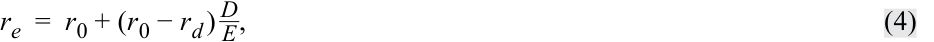
where re is the cost of equity, r 0 is the cost of capital for a company financed only with equity, rd is the cost of debt, D is the market value of debt, and E is the market value of equity. Exhibit 4 shows this relationship.
trong đó $r_e$ là chi phí vốn chủ sở hữu (cost of equity), $r_0$ là chi phí sử dụng vốn của một công ty chỉ được tài trợ bằng vốn chủ sở hữu, $r_d$ là chi phí nợ (cost of debt), $D$ là giá trị thị trường của nợ (market value of debt), và $E$ là giá trị thị trường của vốn chủ sở hữu (market value of equity). Minh họa 4 thể hiện mối quan hệ này.
Exhibit 4: Equity Cost as a Function of the Debt-to-Equity Ratio
Minh họa 4: Chi phí Vốn chủ sở hữu như một Hàm số của Tỷ số Nợ trên Vốn chủ sở hữu (Exhibit 4: Equity Cost as a Function of the Debt-to-Equity Ratio)
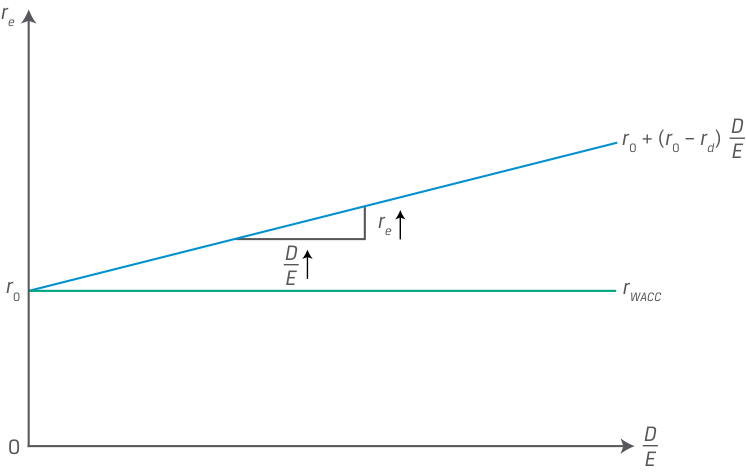
Chú thích hình ảnh: - Trục tung: Chi phí sử dụng vốn ($r_e, r_0, r_{\text{WACC}}$). - Trục hoành: Tỷ số Nợ trên Vốn chủ sở hữu ($\frac{D}{E}$). - Đường biểu diễn: Đường $r_{\text{WACC}}$ nằm ngang tại mức $r_0$; đường chi phí vốn chủ sở hữu $r_e = r_0 + (r_0 - r_d)\frac{D}{E}$ dốc lên tuyến tính theo tỷ số $\frac{D}{E}$ bắt đầu từ tung độ gốc $r_0$.
Note that re increases with the debt-to-equity ratio with an intercept equal to r 0 and slope equal to the quantity ( r 0 − rd ), while the WACC ( rWACC ) does not change as debt levels change.
Lưu ý rằng $r_e$ tăng lên theo tỷ số nợ trên vốn chủ sở hữu với tung độ gốc (intercept) bằng $r_0$ và hệ số góc (slope) bằng đại lượng $(r_0 - r_d)$, trong khi WACC ($r_{\text{WACC}}$) không thay đổi khi mức nợ thay đổi.
Given that capital structure changes do not affect the company’s future cash flow stream and the company’s weighted-average cost of capital remains unchanged for any chosen capital structure, there is no change in the value of the company. Note that Modigliani and Miller did not assume away the possibility of bankruptcy but simply assumed it occurs at zero cost.
Do những thay đổi về cấu trúc vốn không ảnh hưởng đến dòng chảy tiền mặt trong tương lai của công ty và chi phí sử dụng vốn bình quân gia quyền của công ty vẫn không đổi đối với bất kỳ cấu trúc vốn nào được lựa chọn, nên không có sự thay đổi nào trong giá trị của công ty. Lưu ý rằng Modigliani và Miller không giả định loại bỏ khả năng phá sản mà chỉ đơn giản giả định rằng việc phá sản xảy ra với chi phí bằng không (zero cost).
MM PROPOSITION II WITHOUT TAXES
ĐỊNH ĐỀ II CỦA MM KHÔNG CÓ THUẾ (MM PROPOSITION II WITHOUT TAXES)
If the cost of equity is assumed to be a linear function of the company’s debtto-equity ratio, then the following is true:
Nếu chi phí vốn chủ sở hữu được giả định là một hàm tuyến tính theo tỷ số nợ trên vốn chủ sở hữu của công ty, thì những điều sau đây là đúng:
1. Higher leverage raises the cost of equity but does not change firm value or WACC.
1. Đòn bẩy cao hơn làm tăng chi phí vốn chủ sở hữu nhưng không làm thay đổi giá trị doanh nghiệp hay WACC.
2. The increase in the cost of equity must exactly offset the greater use of lower-cost debt.
2. Sự gia tăng trong chi phí vốn chủ sở hữu phải bù trừ chính xác cho việc sử dụng nhiều nợ có chi phí thấp hơn.
EXAMPLE 2
VÍ DỤ 2 (EXAMPLE 2)
Gerhardt Corporation Cost of Equity
Chi phí Vốn chủ sở hữu của Tập đoàn Gerhardt (Gerhardt Corporation Cost of Equity)
Assume that Gerhardt Corporation has an all-equity capital structure. Gerhardt has expected annual cash flows (or CFe ) of EUR5,000 and a cost of equity of 10%, which is also its WACC since equity is the firm’s only source of capital. For simplicity, we assume that all cash flows are perpetual. Therefore, Gerhardt’s value is equal to
Giả sử rằng Tập đoàn Gerhardt có cấu trúc vốn hoàn toàn bằng vốn chủ sở hữu (all-equity capital structure). Gerhardt có dòng tiền hàng năm kỳ vọng (hay $CF_e$) là $\text{EUR}5,000$ và chi phí vốn chủ sở hữu là 10%, đây cũng chính là WACC của công ty vì vốn chủ sở hữu là nguồn vốn duy nhất của doanh nghiệp. Để đơn giản, chúng ta giả định rằng tất cả các dòng tiền đều là vĩnh viễn (perpetual). Do đó, giá trị của Gerhardt bằng:
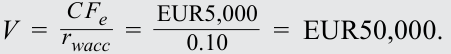
Now suppose that Gerhardt plans to issue EUR15,000 in debt at a cost of 5% and use the proceeds to buy back and reduce its outstanding equity by EUR15,000. This action leaves total invested capital unchanged at EUR50,000.
Bây giờ giả sử rằng Gerhardt có kế hoạch phát hành $\text{EUR}15,000$ nợ với chi phí 5% và sử dụng số tiền thu được để mua lại và giảm lượng vốn chủ sở hữu đang lưu hành đi $\text{EUR}15,000$. Hành động này giữ cho tổng vốn đầu tư không đổi ở mức $\text{EUR}50,000$.
Under MM Proposition I, VL = VU , the value of Gerhardt must remain the same at EUR50,000 after the change in capital structure. Under MM Proposition II, after the change in capital structure, the cost of equity for Gerhardt—now with EUR15,000 in debt capital and EUR35,000 in equity capital—increases to 12.143%:
Theo Định đề I của MM, $V_L = V_U$, giá trị của Gerhardt phải giữ nguyên ở mức $\text{EUR}50,000$ sau khi thay đổi cấu trúc vốn. Theo Định đề II của MM, sau khi thay đổi cấu trúc vốn, chi phí vốn chủ sở hữu của Gerhardt—hiện có $\text{EUR}15,000$ vốn nợ và $\text{EUR}35,000$ vốn chủ sở hữu—tăng lên mức 12.143%:
To prove that Gerhardt’s firm value is unchanged under the new capital structure, we must show its WACC remains unchanged at 10%. With the new cost of equity, Gerhardt’s WACC is now calculated as
Để chứng minh rằng giá trị doanh nghiệp của Gerhardt không thay đổi dưới cấu trúc vốn mới, chúng ta phải chỉ ra rằng WACC của công ty vẫn không đổi ở mức 10%. Với chi phí vốn chủ sở hữu mới, WACC của Gerhardt hiện được tính như sau:
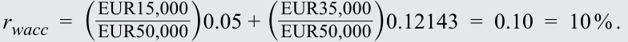
Gerhardt’s WACC is still 10%, because the move to lower-cost debt was perfectly offset by an increase in the cost of equity. Thus, consistent with MM Proposition I, the value of the firm remains unchanged, at EUR50,000. Furthermore, the value of Gerhardt must equal the sum of the present values of
WACC của Gerhardt vẫn là 10%, bởi vì việc chuyển sang khoản nợ có chi phí thấp hơn đã bị bù trừ hoàn hảo bởi sự gia tăng trong chi phí vốn chủ sở hữu. Do đó, nhất quán với Định đề I của MM, giá trị của doanh nghiệp vẫn không thay đổi ở mức $\text{EUR}50,000$. Hơn nữa, giá trị của Gerhardt phải bằng tổng giá trị hiện tại của
cash flows to debtholders ( CFd ) and shareholders ( CFe ). With EUR15,000 debt at a cost of 5% ( rd ), Gerhardt makes the following debtholder and shareholder payments:
các dòng tiền dành cho chủ nợ ($CF_d$) và cổ đông ($CF_e$). Với khoản nợ $\text{EUR}15,000$ có chi phí 5% ($r_d$), Gerhardt thực hiện các khoản thanh toán cho chủ nợ và cổ đông như sau:
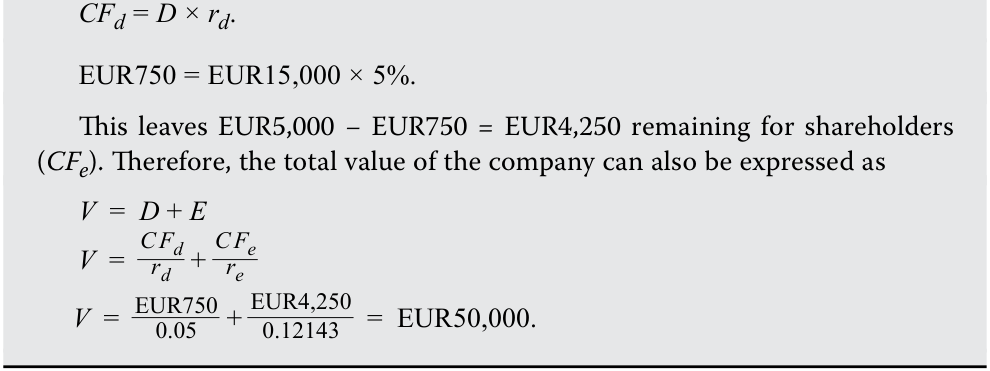
Firm Value with Taxes (MM Proposition I with Taxes)
Giá trị Doanh nghiệp khi Có Thuế (Định đề I của MM Có Thuế — MM Proposition I with Taxes)
In most jurisdictions, interest expense is deductible from a company’s income for tax purposes. In other words, debt provides a tax shield for companies that are earning profits, and the money saved in taxes enhances the value of the company. Ignoring other factors, such as the costs of financial distress and bankruptcy, for now, let us explore the two MM propositions when we relax the assumption of no corporate taxes. The value of the company increases with increasing levels of debt, and the actual cost of debt is reduced by the amount of the tax benefit:
Tại hầu hết các khu vực pháp lý, chi phí lãi vay được khấu trừ khỏi thu nhập của công ty cho mục đích tính thuế. Nói cách khác, nợ tạo ra một lá chắn thuế (tax shield) cho các công ty đang tạo ra lợi nhuận, và số tiền tiết kiệm được từ thuế sẽ làm gia tăng giá trị của công ty. Tạm thời bỏ qua các yếu tố khác, chẳng hạn như chi phí kiệt quệ tài chính và phá sản, chúng ta hãy khám phá hai định đề của MM khi nới lỏng giả định không có thuế thu nhập doanh nghiệp. Giá trị của công ty tăng lên khi mức độ nợ tăng lên, và chi phí nợ thực tế được giảm bớt bằng mức lợi ích thuế:
After-tax cost of debt = Before-tax cost of debt × (1 − Marginal tax rate).
Modigliani and Miller’s Proposition I with corporate taxes states that in the presence of corporate taxes (but not personal taxes), the value of the levered company is greater than that of the all-equity company by an amount equal to the tax rate multiplied by the value of the debt ( tD ), defined as the present value of the debt tax shield :
Định đề I của Modigliani và Miller khi có thuế thu nhập doanh nghiệp phát biểu rằng khi có sự hiện diện của thuế thu nhập doanh nghiệp (nhưng không có thuế thu nhập cá nhân), giá trị của công ty có vay nợ lớn hơn giá trị của công ty tài trợ hoàn toàn bằng vốn chủ sở hữu một lượng bằng thuế suất nhân với giá trị của khoản nợ ($tD$), được định nghĩa là giá trị hiện tại của lá chắn thuế từ nợ (debt tax shield):
VL = VU + tD , ~~(5)~~
where t is the marginal tax rate and tD is the present value of the debt tax shield. When there are corporate taxes, a profitable company can increase its value by using debt financing, as shown in Exhibit 5.
trong đó $t$ là thuế suất biên (marginal tax rate) và $tD$ là giá trị hiện tại của lá chắn thuế từ nợ (present value of the debt tax shield). Khi có thuế thu nhập doanh nghiệp, một công ty có lãi có thể gia tăng giá trị của mình bằng cách sử dụng nguồn tài trợ bằng nợ, như được thể hiện trong Minh họa 5.
Exhibit 5: Firm Value with Corporate Taxes and Debt
Minh họa 5: Giá trị Doanh nghiệp khi Có Thuế Thu nhập Doanh nghiệp và Nợ (Exhibit 5: Firm Value with Corporate Taxes and Debt)
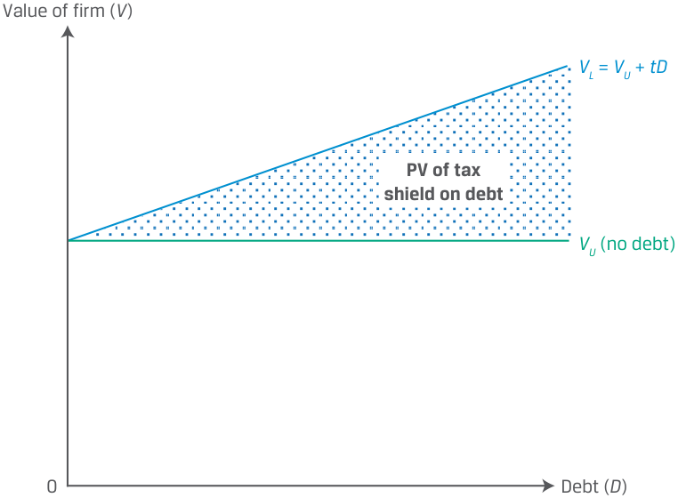
Chú thích hình ảnh: - Trục tung: Giá trị doanh nghiệp ($V$). - Trục hoành: Nợ ($D$). - Đường biểu diễn: Đường nằm ngang biểu diễn giá trị doanh nghiệp không vay nợ $V_U$ (no debt). Đường dốc lên biểu diễn giá trị doanh nghiệp có vay nợ $V_L = V_U + tD$, trong đó khoảng cách thẳng đứng giữa hai đường là Giá trị hiện tại của lá chắn thuế từ nợ (PV of tax shield on debt).
As noted in Proposition I with corporate taxes, the increase in firm value, V , is solely attributable to the tax shield. Taken to its (unrealistic) extreme, Equation 5 predicts a value-maximizing capital structure of 100% debt.
Như đã lưu ý trong Định đề I có thuế thu nhập doanh nghiệp, sự gia tăng trong giá trị doanh nghiệp, $V$, hoàn toàn là nhờ vào lá chắn thuế. Nếu đẩy đến mức cực đoan (phi thực tế), Phương trình 5 dự đoán một cấu trúc vốn tối đa hóa giá trị là 100% nợ.
MM PROPOSITION I WITH CORPORATE TAXES
ĐỊNH ĐỀ I CỦA MM CÓ THUẾ THU NHẬP DOANH NGHIỆP (MM PROPOSITION I WITH CORPORATE TAXES)
If the market value of a levered company is equal to the value of an unlevered company plus the value of the debt tax shield, then the following is true:
Nếu giá trị thị trường của một công ty có vay nợ bằng giá trị của một công ty không vay nợ cộng với giá trị của lá chắn thuế từ nợ, thì những điều sau đây là đúng:
1. In the presence of taxes, a profitable company can increase its value ( V ) by using debt.
1. Khi có sự hiện diện của thuế, một công ty có lãi có thể làm tăng giá trị của mình ($V$) bằng cách sử dụng nợ.
2. The higher the tax rate, the greater the benefit of using debt in the ca p ital structure.
2. Thuế suất càng cao, lợi ích của việc sử dụng nợ trong cấu trúc vốn càng lớn.
Cost of Capital (MM Proposition II with Taxes)
Chi phí Sử dụng Vốn (Định đề II của MM Có Thuế — MM Proposition II with Taxes)
If the value of the company increases as it uses more debt, the company’s WACC must decrease as it uses more debt. That is, in the earlier propositions without corporate taxes, the lower cost of debt was fully offset by an increase in the cost of equity. Now, in the presence of corporate taxes, the cost of debt is further lowered by the tax benefit such that the lower debt cost outweighs the increase in the cost of equity and results in a lower WACC.
Nếu giá trị của công ty tăng lên khi sử dụng nhiều nợ hơn, thì WACC của công ty phải giảm xuống khi sử dụng nhiều nợ hơn. Nghĩa là, trong các định đề trước đó khi không có thuế thu nhập doanh nghiệp, chi phí nợ thấp hơn đã bị bù trừ hoàn toàn bởi sự gia tăng trong chi phí vốn chủ sở hữu. Giờ đây, khi có sự hiện diện của thuế thu nhập doanh nghiệp, chi phí nợ còn được hạ thấp hơn nữa nhờ lợi ích thuế đến mức chi phí nợ thấp hơn vượt trội hơn sự gia tăng trong chi phí vốn chủ sở hữu và dẫn đến một mức WACC thấp hơn.
To demonstrate this idea, let’s begin with the revised cost of equity under MM Proposition II with corporate taxes:
Để chứng minh ý tưởng này, chúng ta hãy bắt đầu với chi phí vốn chủ sở hữu đã được điều chỉnh theo Định đề II của MM khi có thuế thu nhập doanh nghiệp:
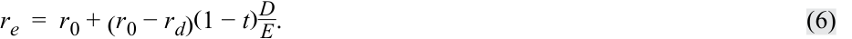
Notice that the only difference between Equation 6 and Equation 4 (MM Proposition II with no taxes) is the presence of the term (1 − t ). When t is zero, the two equations are identical. When t is not zero, the term (1 − t ) is less than 1 and serves to reduce the cost of levered equity. The cost of equity still rises as the company increases the amount of debt in its capital structure, but it rises at a slower rate than in the no-tax case. as shown in Exhibit 6.
Hãy chú ý rằng điểm khác biệt duy nhất giữa Phương trình 6 và Phương trình 4 (Định đề II của MM không có thuế) là sự hiện diện của thừa số $(1 - t)$. Khi $t$ bằng không, hai phương trình hoàn toàn giống hệt nhau. Khi $t$ khác không, thừa số $(1 - t)$ nhỏ hơn 1 và có tác dụng làm giảm chi phí vốn chủ sở hữu có vay nợ (cost of levered equity). Chi phí vốn chủ sở hữu vẫn tăng lên khi công ty tăng lượng nợ trong cấu trúc vốn của mình, nhưng nó tăng với tốc độ chậm hơn so với trường hợp không có thuế, như được thể hiện trong Minh họa 6.
Exhibit 6: Equity Cost, Debt-to-Equity Ratio, and WACC with Taxes
Minh họa 6: Chi phí Vốn chủ sở hữu, Tỷ số Nợ trên Vốn chủ sở hữu, và WACC khi Có Thuế (Exhibit 6: Equity Cost, Debt-to-Equity Ratio, and WACC with Taxes)
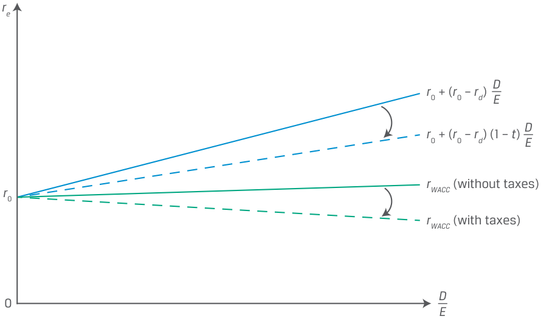
Chú thích hình ảnh: - Trục tung: Chi phí sử dụng vốn ($r_e, r_0, r_{\text{WACC}}$). - Trục hoành: Tỷ số Nợ trên Vốn chủ sở hữu ($\frac{D}{E}$). - Đường biểu diễn: - Đường $r_e$ không có thuế: $r_0 + (r_0 - r_d)\frac{D}{E}$ (dốc lên cao hơn). - Đường $r_e$ có thuế: $r_0 + (r_0 - r_d)(1 - t)\frac{D}{E}$ (dốc lên chậm hơn). - Đường $r_{\text{WACC}}$ không có thuế (without taxes): nằm ngang tại mức $r_0$. - Đường $r_{\text{WACC}}$ có thuế (with taxes): dốc xuống khi tỷ số $\frac{D}{E}$ tăng.
Consequently, as debt increases, the company’s rWACC decreases and the company’s value increases. This result implies that when there are taxes (and no financial distress or bankruptcy costs), debt financing is highly advantageous. Taken to an extreme, this result also suggests that a company’s optimal capital structure is 100% debt—a conclusion that is at odds with reality and a direct result of Modigliani and Miller’s restrictive assumptions.
Hệ quả là, khi nợ tăng lên, $r_{\text{WACC}}$ của công ty giảm xuống và giá trị của công ty tăng lên. Kết quả này hàm ý rằng khi có thuế (và không có chi phí kiệt quệ tài chính hay chi phí phá sản), việc tài trợ bằng nợ mang lại lợi thế rất lớn. Nếu đẩy đến mức cực đoan, kết quả này cũng gợi ý rằng cấu trúc vốn tối ưu của một công ty là 100% nợ—một kết luận trái ngược với thực tế và là hệ quả trực tiếp từ các giả định khắt khe của Modigliani và Miller.
MM PROPOSITION II WITH CORPORATE TAXES
ĐỊNH ĐỀ II CỦA MM CÓ THUẾ THU NHẬP DOANH NGHIỆP (MM PROPOSITION II WITH CORPORATE TAXES)
If the cost of equity is a linear function of the company’s debt-to-equity ratio with an adjustment for the tax rate, then the following is true:
Nếu chi phí vốn chủ sở hữu là một hàm tuyến tính theo tỷ số nợ trên vốn chủ sở hữu của công ty có điều chỉnh theo thuế suất, thì những điều sau đây là đúng:
1. In the presence of taxes, the cost of equity rises as the company uses more debt but at a slower rate than in the no-tax case.
1. Khi có sự hiện diện của thuế, chi phí vốn chủ sở hữu tăng lên khi công ty sử dụng nhiều nợ hơn nhưng với tốc độ chậm hơn so với trường hợp không có thuế.
2. As the company’s use of debt increases, its WACC decreases and its value increases.
2. Khi mức độ sử dụng nợ của công ty tăng lên, WACC của công ty giảm xuống và giá trị của công ty tăng lên.
3. In the presence of taxes (but no financial distress or bankruptcy costs), the use of debt is value enhancing and, at the extreme, 100% debt is o p timal.
3. Khi có sự hiện diện của thuế (nhưng không có chi phí kiệt quệ tài chính hay chi phí phá sản), việc sử dụng nợ sẽ làm gia tăng giá trị và, ở mức cực đoan, cấu trúc 100% nợ là tối ưu.
EXAMPLE 3
VÍ DỤ 3 (EXAMPLE 3)
Gerhardt Corporation under Corporate Taxes
Tập đoàn Gerhardt khi Có Thuế Thu nhập Doanh nghiệp (Gerhardt Corporation under Corporate Taxes)
Recall from the previous example that annual cash flows to Gerhardt shareholders were EUR5,000 and the cost of equity (and WACC) was 10%. As before, Gerhardt is planning to issue EUR15,000 of 5% debt to buy back an equivalent amount of equity. Now, however, assume that Gerhardt pays corporate taxes at a rate of 25%.
Hãy nhớ lại từ ví dụ trước rằng dòng tiền hàng năm dành cho các cổ đông của Gerhardt là $\text{EUR}5,000$ và chi phí vốn chủ sở hữu (cũng là WACC) là 10%. Giống như trước, Gerhardt đang có kế hoạch phát hành $\text{EUR}15,000$ nợ với lãi suất 5% để mua lại một lượng vốn chủ sở hữu tương đương. Tuy nhiên, bây giờ hãy giả sử rằng Gerhardt nộp thuế thu nhập doanh nghiệp ở mức thuế suất 25%.
Since the company does not currently have debt, the after-tax cash flows are now EUR5,000(1 − 0.25), or EUR3,750. Because the cash flows are assumed to be perpetual, the value of the company is EUR37,500 (= EUR3,750/0.10), considerably less than the amount when there were no corporate taxes, EUR50,000.
Vì công ty hiện tại không có nợ, nên dòng tiền sau thuế hiện là $\text{EUR}5,000(1 - 0.25)$, hay $\text{EUR}3,750$. Vì các dòng tiền được giả định là vĩnh viễn, nên giá trị của công ty là $\text{EUR}37,500$ ($= \text{EUR}3,750 / 0.10$), thấp hơn đáng kể so với mức $\text{EUR}50,000$ khi không có thuế thu nhập doanh nghiệp.
Now, suppose Gerhardt proceeds to issue EUR15,000 of debt and uses the proceeds to repurchase equity. According to MM Proposition II with corporate taxes (i.e., Equation 5), the value of the company is
Bây giờ, giả sử Gerhardt tiến hành phát hành $\text{EUR}15,000$ nợ và sử dụng số tiền thu được để mua lại cổ phiếu. Theo Định đề I của MM có thuế thu nhập doanh nghiệp (tức Phương trình 5), giá trị của công ty là:
VL = VU + tD = EUR37,500 + 0.25(EUR15,000) = EUR41,250.
The total company value is now EUR41,250, consisting of debt of EUR15,000 and equity of EUR26,250 (= EUR41,250 − EUR15,000).
Tổng giá trị công ty hiện tại là $\text{EUR}41,250$, bao gồm khoản nợ $\text{EUR}15,000$ và vốn chủ sở hữu $\text{EUR}26,250$ ($= \text{EUR}41,250 - \text{EUR}15,000$).
According to MM Proposition II with corporate taxes (Equation 6), the new cost of equity for Gerhardt is
Theo Định đề II của MM có thuế thu nhập doanh nghiệp (Phương trình 6), chi phí vốn chủ sở hữu mới của Gerhardt là:
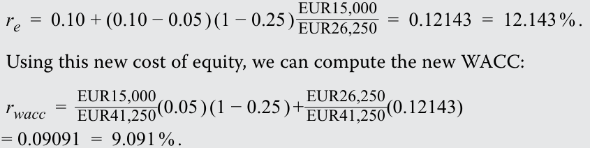
Unlike the previous example, where Gerhardt’s WACC did not change with the change in capital structure, Gerhardt’s WACC decreased in this example from 10% to 9.091%. This reduction in WACC resulted in an increase in company value to EUR41,250:
Không giống như ví dụ trước, nơi WACC của Gerhardt không thay đổi khi thay đổi cấu trúc vốn, WACC của Gerhardt trong ví dụ này đã giảm từ 10% xuống 9.091%. Sự sụt giảm trong WACC này đã dẫn đến sự gia tăng giá trị công ty lên mức $\text{EUR}41,250$:
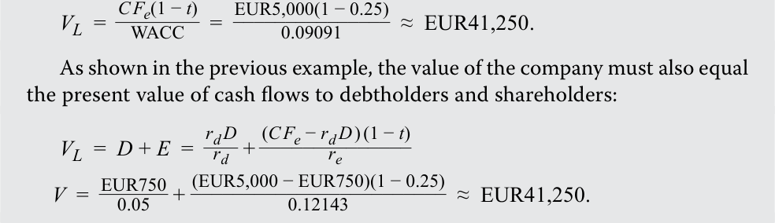
Of course, in the real world, taxes are not the only factor affecting the value of a levered company. The analysis becomes more complex when we consider the costs of financial distress, among other real-world considerations.
Tất nhiên, trong thế giới thực, thuế không phải là yếu tố duy nhất ảnh hưởng đến giá trị của một công ty có vay nợ. Phân tích sẽ trở nên phức tạp hơn khi chúng ta xem xét chi phí kiệt quệ tài chính (costs of financial distress), cùng với những yếu tố thực tiễn khác.
Cost of Financial Distress
Chi phí Kiệt quệ Tài chính (Cost of Financial Distress)
Financial distress refers to the heightened uncertainty regarding a company’s ability to meet its obligations because of diminished earnings power or actual current losses. Operating and financial leverage can magnify profits but also increase losses and the likelihood of financial distress. Even before filing for bankruptcy, companies under financial distress may lose customers, creditors, suppliers, and employees.
Kiệt quệ tài chính (financial distress) đề cập đến sự gia tăng mức độ bất định liên quan đến khả năng đáp ứng các nghĩa vụ nợ của một công ty do năng lực tạo thu nhập suy giảm hoặc do thua lỗ thực tế hiện tại. Đòn bẩy hoạt động và đòn bẩy tài chính có thể khuếch đại lợi nhuận nhưng cũng làm gia tăng các khoản lỗ và khả năng xảy ra kiệt quệ tài chính. Ngay cả trước khi nộp đơn xin phá sản, các công ty đang trong tình trạng kiệt quệ tài chính có thể đánh mất khách hàng, chủ nợ, nhà cung cấp và nhân viên.
Direct costs of financial distress are cash expenses associated with bankruptcy, such as legal and administrative fees, while indirect costs include forgone business and investment opportunities, reputational risk, and costs arising from conflicts of interest between managers and debtholders, or agency costs of debt, when a firm is near or in bankruptcy.
Chi phí trực tiếp của kiệt quệ tài chính (direct costs of financial distress) là các khoản chi phí bằng tiền mặt gắn liền với việc phá sản, chẳng hạn như phí pháp lý và hành chính, trong khi chi phí gián tiếp (indirect costs) bao gồm các cơ hội kinh doanh và đầu tư bị bỏ lỡ, rủi ro danh tiếng (reputational risk), và các chi phí phát sinh từ xung đột lợi ích giữa người quản lý và chủ nợ, hay chi phí đại diện của nợ (agency costs of debt), khi doanh nghiệp ở gần hoặc đang trong tình trạng phá sản.
Costs of financial distress are lower for firms whose assets have a ready secondary market. Airlines, shipping companies, and some manufacturers have tangible assets that can be easily sold. Technology, pharmaceutical, and information technology firms, as well as those in the service sector, usually lack such assets and have higher costs associated with financial distress. The probability of financial distress and bankruptcy rises with more debt in the capital structure, higher sales risk and operating leverage, and lower liquidity. The task of optimizing a firm’s capital structure by taking these and other factors into consideration is the subject of the next lesson.
Chi phí kiệt quệ tài chính thấp hơn đối với các doanh nghiệp có tài sản sở hữu một thị trường thứ cấp sẵn có (ready secondary market). Các hãng hàng không, công ty vận tải biển và một số nhà sản xuất có các tài sản hữu hình có thể dễ dàng bán đi. Các doanh nghiệp công nghệ, dược phẩm và công nghệ thông tin, cũng như các doanh nghiệp trong lĩnh vực dịch vụ, thường thiếu những tài sản như vậy và có chi phí gắn liền với kiệt quệ tài chính cao hơn. Xác suất xảy ra kiệt quệ tài chính và phá sản tăng lên khi có nhiều nợ hơn trong cấu trúc vốn, rủi ro doanh thu và đòn bẩy hoạt động cao hơn, và tính thanh khoản thấp hơn. Nhiệm vụ tối ưu hóa cấu trúc vốn của doanh nghiệp bằng cách tính đến những yếu tố này và các yếu tố khác là chủ đề của bài học tiếp theo.
EXAMPLE 4
VÍ DỤ 4 (EXAMPLE 4)
The Costs of Financial Distress
Chi phí Kiệt quệ Tài chính (The Costs of Financial Distress)
Rite Aid Corporation, listed on the NYSE, operates over 2,000 retail pharmacies in the United States. The company has a highly leveraged balance sheet, with a ratio of net debt to annual earnings before interest, taxes, depreciation, and amortization over 5.0 for many years. During the COVID-19 pandemic, the company performed well, exceeding profit expectations largely due to brisk COVID-19 testing and vaccine revenues. However, as the pandemic entered its third year, vaccine and testing revenue began to fall, and other issues, such as pricing declines from insurance companies and wage pressures, accelerated. Owing to its high financial leverage, the ensuing reduction in analysts’ profit estimates resulted in large declines in the prices of Rite Aid debt and equity: Over the first five months of 2022, the price of its 02/15/2027 unsecured notes fell from 94 to 60 and its stock price fell from $15 to $6 per share. By May 2022, Rite Aid’s cost of debt exceeded 20%.
Tập đoàn Rite Aid (Rite Aid Corporation), được niêm yết trên sàn NYSE, vận hành hơn 2,000 hiệu thuốc bán lẻ tại Hoa Kỳ. Công ty có một bảng cân đối kế toán sử dụng đòn bẩy rất cao, với tỷ số nợ ròng trên lợi nhuận hàng năm trước lãi vay, thuế, khấu hao và phân bổ (Net Debt/EBITDA) vượt mức 5.0 trong nhiều năm. Trong đại dịch COVID-19, công ty đã hoạt động tốt, vượt kỳ vọng lợi nhuận phần lớn nhờ vào doanh thu xét nghiệm và tiêm chủng vắc-xin COVID-19 sôi động. Tuy nhiên, khi đại dịch bước sang năm thứ ba, doanh thu từ vắc-xin và xét nghiệm bắt đầu sụt giảm, và các vấn đề khác, chẳng hạn như việc giảm giá thanh toán từ các công ty bảo hiểm và áp lực tiền lương, lại tăng tốc. Do đòn bẩy tài chính cao, việc các nhà phân tích cắt giảm ước tính lợi nhuận sau đó đã dẫn đến sự sụt giảm mạnh về giá nợ và cổ phiếu của Rite Aid: Trong năm tháng đầu năm 2022, giá trái phiếu không có tài sản đảm bảo đáo hạn ngày 15/02/2027 của công ty đã giảm từ 94 xuống 60 và giá cổ phiếu giảm từ $\$15$ xuống $\$6$ mỗi cổ phiếu. Đến tháng 5 năm 2022, chi phí nợ của Rite Aid đã vượt quá 20%.
In April 2022, one equity analyst lowered the estimated fair value of Rite Aid stock from $16 to $1 and warned that the stock may in fact be worthless. According to the analyst, the company faced $200 million per year in interest expenses and another $225 million per year in maintenance capital expenditures. The analyst estimated that next fiscal year, the company would achieve only $370 million in earnings before interest, taxes, depreciation, and amortization, and the analyst warned that it faces considerable challenges in growing beyond that. Continued net losses would render the stock worthless and likely require the company to restructure its obligations with its bondholders.
Vào tháng 4 năm 2022, một nhà phân tích cổ phiếu đã hạ giá trị hợp lý ước tính (estimated fair value) của cổ phiếu Rite Aid từ $\$16$ xuống $\$1$ và cảnh báo rằng cổ phiếu này trên thực tế có thể trở nên vô giá trị (*worthless*). Theo nhà phân tích này, công ty phải đối mặt với $\$200\text{ triệu}$ chi phí lãi vay mỗi năm và thêm $\$225\text{ triệu}$ mỗi năm cho chi tiêu vốn duy trì (*maintenance capital expenditures*). Nhà phân tích ước tính rằng trong năm tài chính tiếp theo, công ty sẽ chỉ đạt được $\$370\text{ triệu}$ lợi nhuận trước lãi vay, thuế, khấu hao và khấu hao tài sản vô hình (EBITDA), đồng thời cảnh báo rằng công ty phải đối mặt với những thách thức đáng kể trong việc tăng trưởng vượt qua con số đó. Các khoản lỗ ròng tiếp diễn sẽ khiến cổ phiếu trở nên vô giá trị và nhiều khả năng buộc công ty phải tái cơ cấu các nghĩa vụ nợ với các trái chủ.
During its quarterly earnings call, management was upbeat, but it intends to close 145 underperforming stores to lower its expenses and further cut corporate costs to improve profitability.
Trong cuộc gọi công bố kết quả kinh doanh hàng quý, ban quản lý vẫn tỏ ra lạc quan, nhưng dự định đóng cửa 145 cửa hàng hoạt động kém hiệu quả để giảm chi phí và cắt giảm thêm chi phí quản lý doanh nghiệp nhằm cải thiện khả năng sinh lời.
QUESTION SET
BỘ CÂU HỎI (QUESTION SET)
- The view that debt financing is highly advantageous and the optimal capital structure is 100% debt is consistent with:
-
A. MM without taxes.
-
B. MM with taxes and financial distress costs.
-
C. MM with taxes and no financial distress cost.
-
Solution :
- Quan điểm cho rằng tài trợ bằng nợ mang lại lợi thế rất lớn và cấu trúc vốn tối ưu là 100% nợ nhất quán với:
-
A. MM không có thuế (MM without taxes).
-
B. MM có thuế và chi phí kiệt quệ tài chính (MM with taxes and financial distress costs).
-
C. MM có thuế và không có chi phí kiệt quệ tài chính (MM with taxes and no financial distress cost).
-
Lời giải:
C is correct. MM with taxes and no distress cost leads to the conclusion that the optimal capital structure is 100% debt. This is because tax law favors debt financing over equity financing since the interest expense on debt financing is tax deductible. Ignoring financial distress costs, the value of the company increases with increasing levels of debt. The value of the levered firm ( VL ) is greater than that of the unlevered one ( VU ) by the amount equal to the tax rate multiplied by the level of debt ( tD ).
C là đáp án đúng. Mô hình MM có thuế và không có chi phí kiệt quệ tài chính dẫn đến kết luận rằng cấu trúc vốn tối ưu là 100% nợ. Điều này là do luật thuế ưu ái tài trợ bằng nợ hơn tài trợ bằng vốn chủ sở hữu vì chi phí lãi vay của nguồn tài trợ bằng nợ được khấu trừ thuế. Nếu bỏ qua chi phí kiệt quệ tài chính, giá trị của công ty sẽ tăng lên khi mức nợ tăng lên. Giá trị của doanh nghiệp có vay nợ ($V_L$) lớn hơn giá trị của doanh nghiệp không vay nợ ($V_U$) một lượng bằng thuế suất nhân với mức nợ ($tD$).
- True or False: What is clear from MM is that the primary driver of firm value is capital structure.
- A. True
- Đúng hay Sai: Điều rõ ràng rút ra từ mô hình MM là động lực chính tạo ra giá trị doanh nghiệp là cấu trúc vốn.
- A. Đúng (True)
- B. Sai (False)
B. False Solution:
Lời giải:
B is correct. This statement is false since it is future cash flows that are the primary driver of value. Under a set of restrictive assumptions, MM’s conclusion of capital structure irrelevance is obtained. Relaxing these assumptions, MM showed that capital structure does impact value, but it has only a modest impact compared to future cash flows.
B là đáp án đúng. Phát biểu này sai vì chính các dòng tiền trong tương lai mới là động lực chính tạo ra giá trị. Dưới một tập hợp các giả định khắt khe, kết luận của MM về sự không liên quan của cấu trúc vốn được thiết lập. Khi nới lỏng các giả định này, MM đã chỉ ra rằng cấu trúc vốn thực sự có tác động đến giá trị, nhưng nó chỉ có tác động khiêm tốn so với các dòng tiền trong tương lai.
- MM Proposition II without taxes differs from MM Proposition I without taxes since it concludes that:
-
A. WACC is unaffected by capital structure.
-
B. the value of the levered firm is equal to that of the unlevered firm.
-
C. higher leverage raises the cost of equity, which exactly offsets the lower cost of debt.
- Định đề II của MM không có thuế khác với Định đề I của MM không có thuế vì nó kết luận rằng:
-
A. WACC không bị ảnh hưởng bởi cấu trúc vốn.
-
B. giá trị của doanh nghiệp có vay nợ bằng với giá trị của doanh nghiệp không vay nợ.
-
C. đòn bẩy cao hơn làm tăng chi phí vốn chủ sở hữu, điều này bù trừ chính xác cho chi phí nợ thấp hơn.
Solution:
Lời giải:
C is correct. MM Proposition II without taxes differs from MM Proposition I without taxes in that the cost of equity will rise with leverage and completely offset the lower cost of debt. Debt has a lower cost relative to equity because debtholders have a priority claim on the cash flow of the firm. So, one would expect WACC to decline with more debt. MM Proposition II without taxes argues that the cost of equity is a linear function of the debt-to-equity ratio. The addition of more low-cost debt to the capital structure will increase the debt-to-equity ratio and raise the cost of equity, offsetting the lower debt cost. As a result, the firm’s WACC is unchanged.
C là đáp án đúng. Định đề II của MM không có thuế khác với Định đề I của MM không có thuế ở chỗ chi phí vốn chủ sở hữu sẽ tăng lên theo đòn bẩy và bù trừ hoàn toàn cho chi phí nợ thấp hơn. Nợ có chi phí thấp hơn so với vốn chủ sở hữu vì các chủ nợ có quyền đòi hỏi ưu tiên đối với dòng tiền của doanh nghiệp. Vì vậy, người ta có thể kỳ vọng WACC sẽ giảm xuống khi có nhiều nợ hơn. Định đề II của MM không có thuế lập luận rằng chi phí vốn chủ sở hữu là một hàm tuyến tính theo tỷ số nợ trên vốn chủ sở hữu. Việc bổ sung thêm nợ chi phí thấp vào cấu trúc vốn sẽ làm tăng tỷ số nợ trên vốn chủ sở hữu và làm tăng chi phí vốn chủ sở hữu, bù trừ cho chi phí nợ thấp hơn. Kết quả là, WACC của doanh nghiệp không thay đổi.
Company Y has an unlevered WACC of 10%. It has a cost of debt equal to 5.5% and a debt-to-equity ratio of 0.75. The corporate tax rate is 25%.
Công ty Y có WACC khi không vay nợ (unlevered WACC) là 10%. Công ty có chi phí nợ bằng 5.5% và tỷ số nợ trên vốn chủ sở hữu là 0.75. Thuế suất thuế thu nhập doanh nghiệp là 25%.
- Fill in the blanks: The cost of equity for Company Y will be ___ if it pays no corporate taxes and _____ if it pays corporate taxes.
- Điền vào chỗ trống: Chi phí vốn chủ sở hữu của Công ty Y sẽ là ___ nếu công ty không nộp thuế thu nhập doanh nghiệp và _____ nếu công ty nộp thuế thu nhập doanh nghiệp.
Solution:
Lời giải:
The cost of equity for Company Y will be 13.37% if it pays no corporate taxes and 12.53% if it pays corporate taxes.
Chi phí vốn chủ sở hữu của Công ty Y sẽ là 13.37% (hoặc 13.375%) nếu công ty không nộp thuế thu nhập doanh nghiệp và 12.53% nếu công ty nộp thuế thu nhập doanh nghiệp.
The cost of equity is a linear function of its debt-to-equity ratio and without taxes is calculated as follows:
Chi phí vốn chủ sở hữu là một hàm tuyến tính theo tỷ số nợ trên vốn chủ sở hữu của công ty và khi không có thuế được tính như sau:
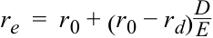
= 10% + (10% – 5.5%)(0.75) = 13.37%.
The cost of equity with taxes is calculated as
Chi phí vốn chủ sở hữu khi có thuế được tính như sau:
re_ = r 0 + ( r 0 − rd )( 1 − t)D E
= 10% + (10% – 5.5%)(1 – 0.25)(0.75) = 12.53%.
- If Company Y is an all-equity-financed firm, its cost of equity will be __ its WACC.
- A. greater than
B. equal to
- Nếu Công ty Y là một doanh nghiệp được tài trợ hoàn toàn bằng vốn chủ sở hữu, thì chi phí vốn chủ sở hữu của công ty sẽ __ WACC của nó.
-
A. lớn hơn (greater than)
-
B. bằng với (equal to)